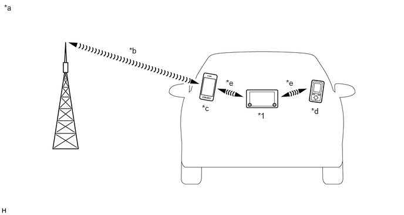

- HFP (Hands-Free Profile) Ver. 1.7 or higher recommended*1
- PBAP (Phone Book Access Profile) Ver. 1.2 or higher recommended*2
- MAP (Message Access Profile) Ver. 1.4 or higher recommended*4
- SPP (Serial Port Profile) Ver. 1.2 or higher recommended*3
| Last Modified: 10-07-2025 | 6.11:8.1.0 | Doc ID: NM100000002GLBV |
| Model Year Start: 2024 | Model: Tacoma | Prod Date Range: [12/2023 - ] |
| Title: AUDIO / VIDEO: AUDIO AND VISUAL SYSTEM: BLUETOOTH COMMUNICATION; 2024 - 2026 MY Tacoma Tacoma HV [12/2023 - ] | ||
BLUETOOTH COMMUNICATION
FUNCTION
(a) "Bluetooth" is a worldwide wireless communication standard widely used as a short range communication tool.
|
*1 |
Audio Head Unit (Built-in "Bluetooth" Antenna) |
- |
- |
|
*a |
The illustrations shown are examples only. The illustrations may differ from the actual audio head unit. |
*b |
Cellular Network |
|
*c |
Cellular Phone ("Bluetooth" Compatible Type) |
*d |
Portable Audio Player ("Bluetooth" Compatible Type) |
|
*e |
"Bluetooth" Wireless Connection |
- |
- |
(b) "Bluetooth" is a trademark owned by Bluetooth SIG, Inc.
(c) "Bluetooth" is a wireless connection technology that uses the 2.4 GHz frequency band.
HINT:
The communication performance of "Bluetooth" may vary depending on obstructions or radio wave conditions between communication devices, electromagnetic radiation, communication device sensitivity or antenna capacity.
|
The Bluetooth word mark and logos are registered trademarks owned by the Bluetooth SIG, Inc. |
(d) By using Bluetooth Low Energy (BLE), communication with lower power consumption can be performed.
HINT:
Bluetooth Low Energy (BLE) communication is used for the driver identification device of the my setting system.
(e) Hands-free Function
(1) The "Bluetooth" built-in audio head unit and a "Bluetooth" compatible cellular phone* can be connected using a "Bluetooth" wireless connection. This enables the use of the hands-free function on the cellular phone even if the phone is in a pocket or bag. For this reason, it is not necessary to use a connector or cable to connect the cellular phone.
*: Some versions of "Bluetooth" compatible cellular phones may not function properly.
(2) The hands-free function uses a "Bluetooth" wireless connection. A "Bluetooth" wireless connection can be affected by uncertain elements, such as vehicle location, time of day, etc. Therefore, problems related to establishing connection may be caused temporarily by "Bluetooth" connection conditions. It is necessary to check the frequency of occurrence, connection conditions using another cellular phone, etc. when performing diagnosis.
(3) Compatible hands-free devices
|
Required "Bluetooth" specifications |
Ver. 2.1 or higher |
|
Compatible profiles |
|
|
Maximum number of hands-free devices that can be registered (including audio devices) |
5 |
- *1: This profile is necessary when using the hands-free function.
- *2: This profile is necessary when transferring the phonebook data.
- *3: This profile is necessary when using the driver profile function.
- *4: This profile is necessary when using the message function (Models with SMS/MMS Function).
HINT:
- The amount of remaining battery charge displayed on the audio head unit may be different from that of the "Bluetooth" device.
- Some profiles described above may not be supported by the system depending on the audio head unit equipped.
- If the specification of the connected Bluetooth phone is lower than the recommended or does not support the functions required, the available functions may be limited.
- If a Bluetooth-compatible cellular phone does not support the Hands Free Profile (HFP), the cellular phone cannot be registered or data transmission such as Serial Port Profile (SPP), message access profile (MAP) or Phone Book Access Profile (PBAP) may not be available.
- When multiple Bluetooth-compatible devices are registered, the user can select different devices for the Bluetooth audio system and Bluetooth hands-free system.
- The connection history of Bluetooth devices is stored in the internal memory of the audio head unit. The stored data can be exported to a USB memory device as a connection history file, which can be checked using the Global TechStream (GTS).
- The Bluetooth hands-free system is included in the audio head unit.
(f) 2-device Simultaneous Connection Function
(1) 2 mobile devices can be simultaneously connected via "Bluetooth" and can separately utilize the hands-free function provide driver profile is loaded.
(2) The mobile device connected to the audio head unit can be changed using the hands-free screen. Even after changing the mobile device, the connection status of the 2 "Bluetooth" devices can be maintained.
HINT:
- It is necessary to register a driver profile in order to use the 2-device simultaneous connection function.
- If making a phone call when not using the hands-free mode screen (such as when information is output from the navigation system), output is from the registered mobile device that is set as the priority device.
- When making a call on either mobile device, another call cannot be made on the other mobile device.
(g) "Bluetooth" Audio Function
(1) The "Bluetooth" built-in audio head unit and a "Bluetooth" compatible portable audio player* can be connected using a "Bluetooth" wireless connection. This enables files stored in the portable audio player to be heard from the vehicle speakers. In addition, operations such as play/stop can be performed directly from the audio head unit.
*: Some versions of "Bluetooth" compatible audio players may not be able to be connected via the "Bluetooth" function, or music may play, but functions available using the audio head unit may be limited.
(2) Compatible "Bluetooth" audio devices
|
Required "Bluetooth" specifications |
Ver. 2.1 or higher |
|
Compatible profiles |
|
|
Supported codecs |
LDAC/AAC/SBC |
|
Maximum number of audio devices that can be registered (including hands-free devices) |
5 |
HINT:
- When multiple Bluetooth-compatible devices are registered, the user can select different devices for the Bluetooth audio system and Bluetooth hands-free system.
- The connection history of Bluetooth devices is stored in the internal memory of the audio head unit. The stored data can be exported to a USB memory device as a connection history file, which can be checked using the Global TechStream (GTS).
- The functions of the Bluetooth audio system that can be used vary with the version of the Audio/Video Remote Control Profile (AVRCP) supported by the Bluetooth audio player that is being used.
- The Bluetooth audio control system is built into the audio head unit.
- Up to 5 Bluetooth compatible devices can be registered.
(3) By encoding/decoding the Advanced Audio Distribution Profile (A2DP) via the LDAC codec, high quality sound data equivalent to high-resolution can be transmitted by wireless communication.
HINT:
It is necessary to have a device that is capable of playing back high-resolution sound source files using an LDAC codec.
|
The name and logo of LDAC are trademarks of Sony Corporation. |